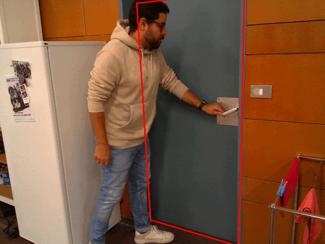
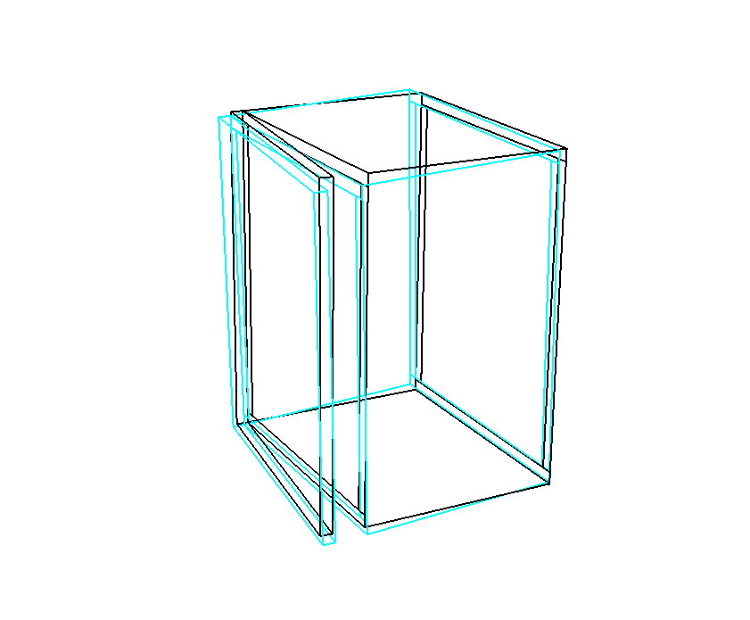

Multi-Contact Door Opening With RGB-D, Force-Torque, and Tactile Sensing
Landing page for the components and publications developed as part of the doctoral dissertation:
“Multi-Contact Door Opening by a Robotic Arm Using an RGB-D Camera, a Force-Torque Sensor and a Tactile Sensor”
This research addresses the challenges of autonomous service robots interacting with articulated objects (doors and drawers) in unstructured, human-centered environments. It proposes an integrated pipeline for detection from human demonstrations, multi-contact path planning for handleless cabinet doors, and multimodal failure detection and recovery.
Doctoral Dissertation
The complete thesis combining perception, multi-contact planning, and visuo-force-tactile execution frameworks for robotic manipulation of articulated furniture.
Contributions:
- A method for detecting doors and drawers based on a sequence of RGB-D images of human demonstrations.
- A robot arm path planning method for multi-contact door opening.
- A method for opening doors with a robot arm based on RGB-D camera calibration using force-torque and tactile sensor data.
Publications & Projects

Detects doors and drawers based on a sequence of RGB-D images captured during human demonstrations. Reconstructs articulated object models and inserts them into an environment map, enabling robust state estimation from a single RGB-D observation.

A path planning method that leverages multiple contacts to robustly open handleless doors with a robotic arm. Searches over feasible end-effector configurations distributed over the door surface to generate collision-free and kinematically feasible opening paths.

A door-opening framework that integrates visual, force, and tactile feedback to detect missed contacts, contact loss, and collisions. Features a correction method that updates camera parameters based on failed attempts to improve execution reliability over time.